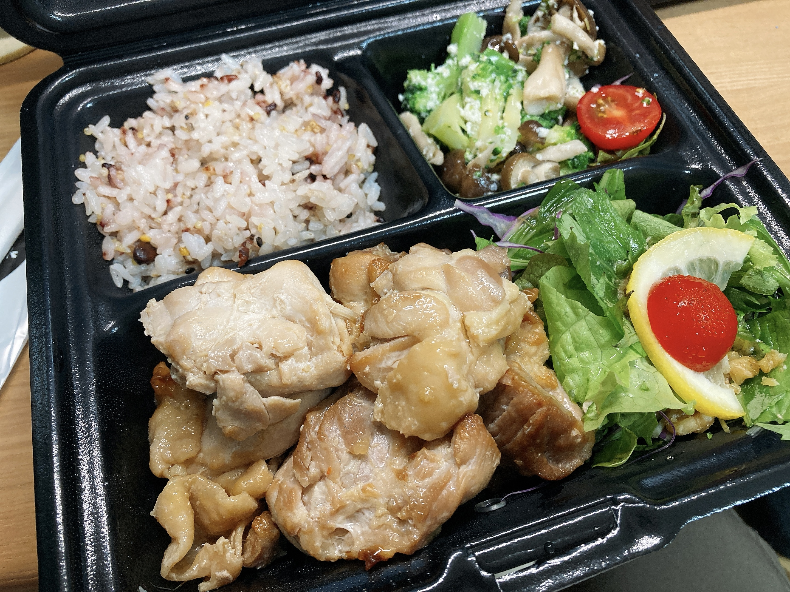

近況報告でも
日記を始めてからもう一ヶ月だそうで。時間的なコストのデカさから日記脱落者がどんどん増えていく中、初の日記一ヶ月継続達成者になりました。一日一記事というわけではないのできっちり継続を誇っていいのかわかりませんが……。
この日記をずっと読み続けている物好きの皆様なら既にご存知でしょうが、わたくし夏休みは平日がクソ多忙でして、メタい話をすると日記更新が一週間弱遅れています。時間が取れないのでこうなってしまったのですが続ける気はあります。ネタはたくさんあるわけですし。
近況報告というのは、ここ数日間ちょっと日記の環境を変えていたというお話です。かんたんに言うとVimなるものに手を出し始めました（？？？）。
数日前新しいキーボードを購入した私は、US配列の超便利そうな位置に居座っているcapslockを如何に活用するか考えあぐねていました。適当にKarabinerのキーバインドルールを漁っていると、「caps+jkl;で矢印キー」という便利ルールを発掘します。丁度テンキーありキーボードで矢印キーが遠くなったなあと思っていたので、これを使うと日本語変換などで右手が動く必要がないという。感動。これをUS配列有識者に報告したわけですが、
🦉「お前それVimのバインド使った方がよくね？」
と言われました。はてVimとは？名前とせいぜい「:wq」くらいしか知らんかったわけですが、なるほどhjklで上下左右移動をするそう。せっかくなのでKarabinerの設定もそちらに変えてみました。一つ左に指を移動しないとですが、折角なら名のしれたキー対応を覚えてしまったほうが後々便利でしょう。にしても便利ですねこれ。ひょいひょい自由に動かせます。
🦉「お前それ使えるならVim覚えたほうがよくね？」
だそう。曰くこの方はこのhjklができなくてVimを諦めたそうです。へっまじ？こんなにひょいひょい動かせるのに？
ということでここ数日はVSCodeにVim拡張機能を入れて日記を書いています。まだgg, G, I, A, w, b, ctrl+f, ctrl+b, ciw, diw, y, d, u, p, ctrl+r, o, Oくらいしかまともに使えないですが、Aとoがとても便利でたすかっています。逆に、日本語の日記だとw,bで意図しないところに移動してしまったり、INSERTモード中の誤変換をやり直せなかったりというのが不便ではあるかも。後者ってなんとかなりませんかね……。Karabinerさんの力も借りてctrl+jにesc+英数キーを割り振ってからまじでQOLが爆上がりしました。これはいいぞ。
参考にしている記事がありますので興味のある方はぜひ。
https://qiita.com/hachi8833/items/7beeee825c11f7437f54
これでなおさら初代夏休み日記存在を煽れると聞きました。反応がたのしみですね。
すっかりうーばーいーちゅユーザーになってしまいました。今日はいつもと違う弁当を召喚してみました。

緑が丘にあるチキンワークス自由が丘店さん。うーばーじゃなくても店舗テイクアウトができるそう。サラダのドレッシングがよくわからんけど美味い油とよくわからんけど美味い酢とかいうガチなやつで感動した。雑穀、たまに食べると美味しいですよね。